はじめに

「みんな、それぞれの地獄を抱えていて、少しの頑張る理由で生きている。」
看護師として一人ひとりの人生に深く寄り添う中で、そう感じました。
そして、それは私自身も同じでした。
責任の重い仕事に向き合う中で私を支えていたのは、休日に訪れるお気に入りのカフェ、手に取るだけで心が躍る雑貨、大切な人と囲む食卓。
そんな日常のささやかな「ときめき」でした。
だからこそ、デザインの力で
人と物、サービス、そして心躍る体験をつなぐ「架け橋」になりたいと考えています。
看護師として培った「想いを汲み取る対話力」と「本質を捉える力」を土台に「あしたもちょっとだけ頑張ってみようかな」と思えるような日常に寄り添うものをつくりたい。
誠実に、でも遊び心を忘れずに。
心がじんわりとあたたかくなるものを目指しています。
趣味は写真・音楽・カフェ巡り・読書、YouTube編集など。
言葉や文章を考えることが好きで、日常の「きらきら」を集めています。
最近のマイブーム：note・韓国語の勉強
たいせつにしていること
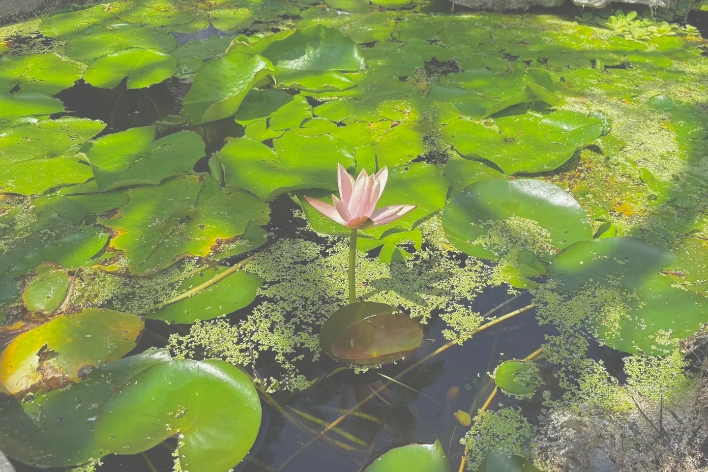
ふわふわしているように見えて「芯がある」と言われることが多いです。相手に対して誠実でいることは、生きている上で1番大切にしていることかもしれません。
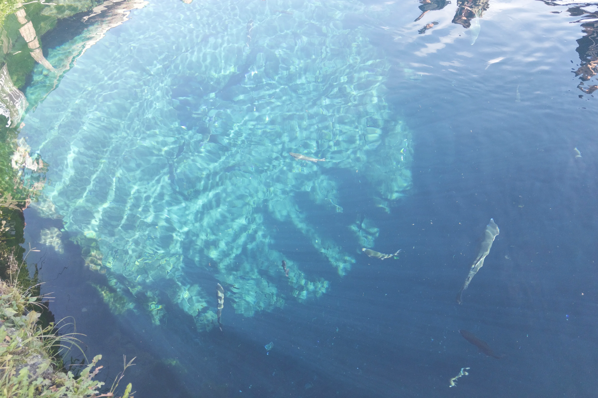
幼いころから「なんでだろう」と物事の背景を考える癖があります。相手の想いをくみ取ることや先を見据えることが得意です。
「やってみたい！」と思ったら挑戦せずにはいられない性格です。新しい世界に触れ、自分の「好き」に向き合う時間を大切にしています。
できること
- Figma
- Adobe Illustrator
- Adobe Photoshop
- HTML / CSS
- JavaScript
- WordPress
これまでのこと
桜島が望む自然いっぱいな環境で育つ。幼いころから人を喜ばせるのが大好き。
友人の相談を受けたことをきっかけに看護師を志す。部活動ではキャプテンを務め、文武両道に励む。
よさこいに出会い、表現することの楽しさと誰かに想いを届ける感動を味わう。看護師・保健師免許を取得。
患者さんと向き合う中で、日常のささやかな「ときめき」の重要性を痛感。日常に寄り添うデザインに携わりたいと転職を決意。
Webデザインを体系的に学べる職業訓練を修了し、転職活動中。ブランディングデザインに興味を持つ。
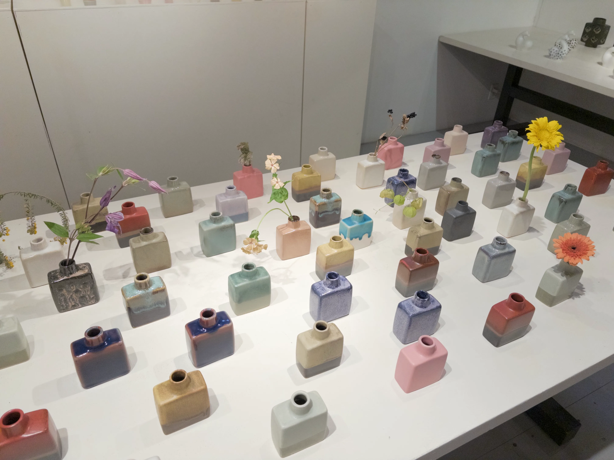
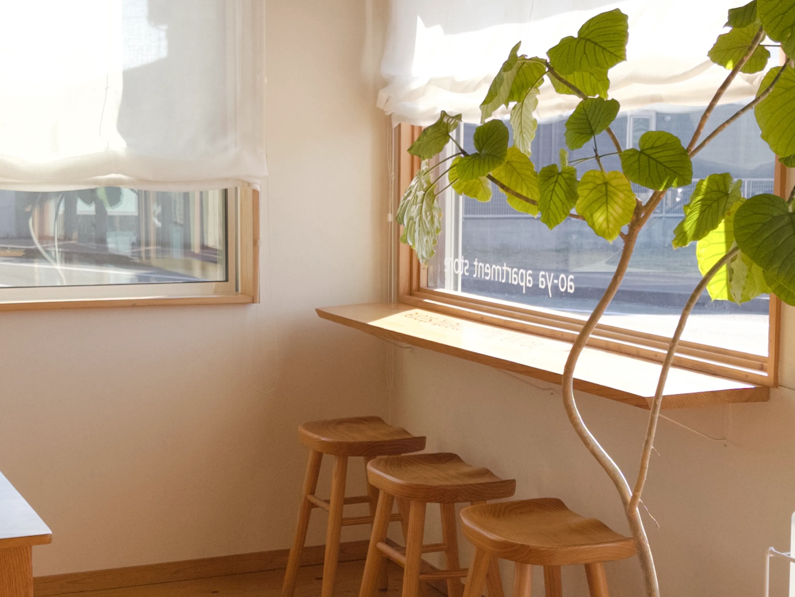
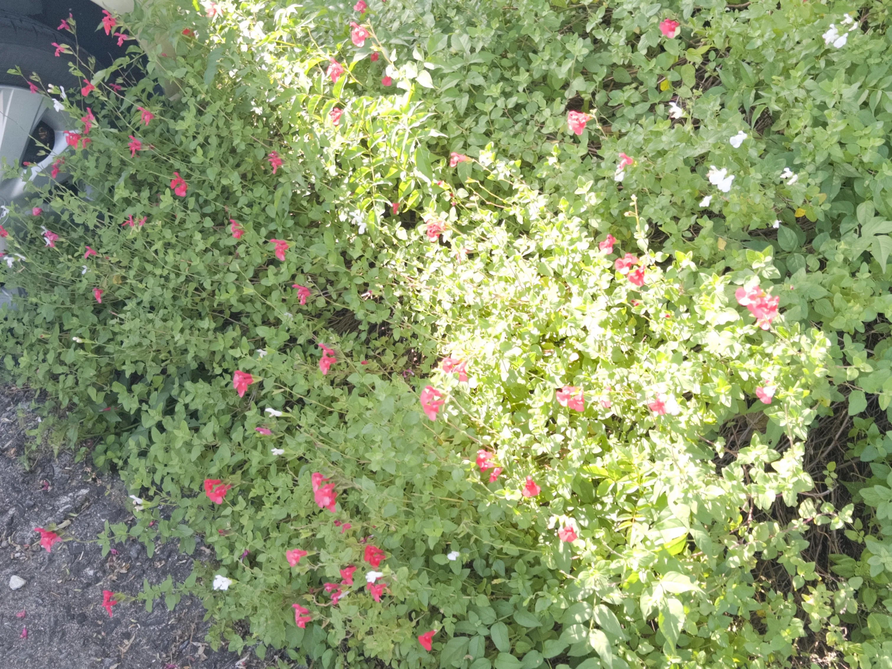
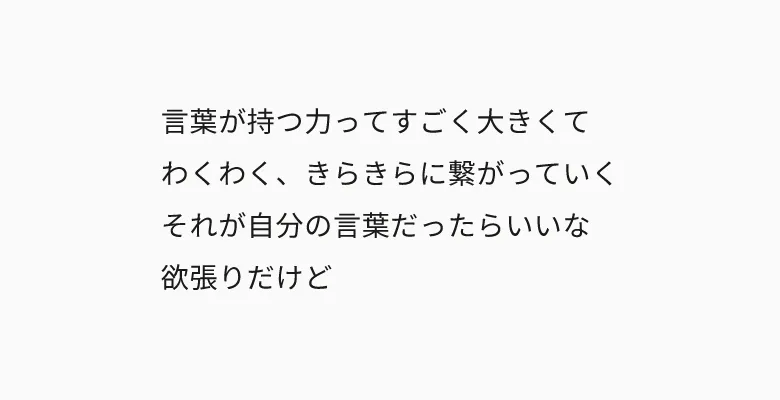
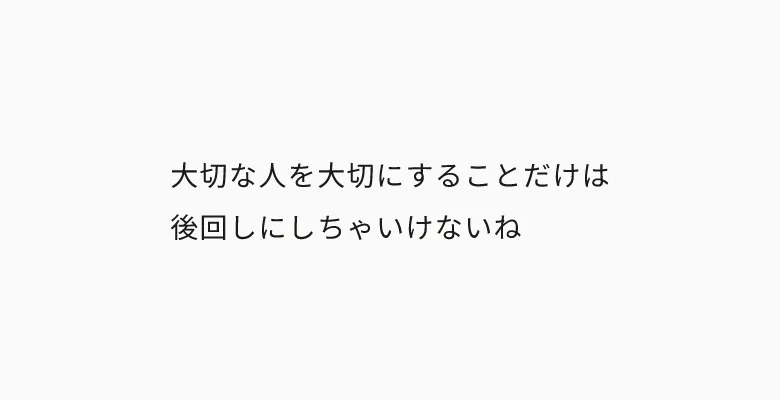
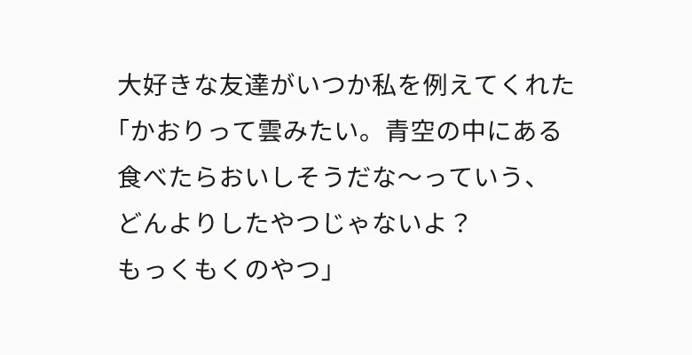
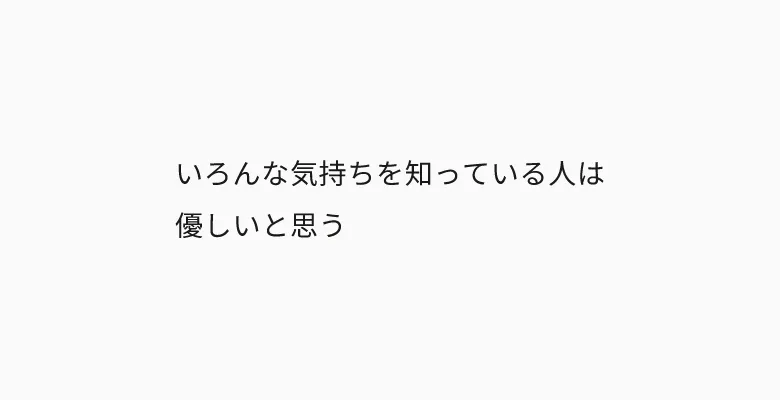
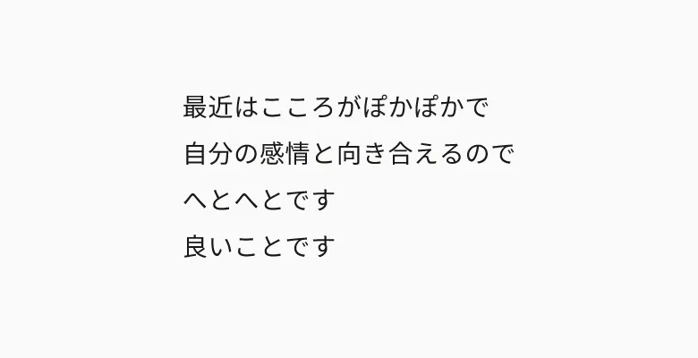
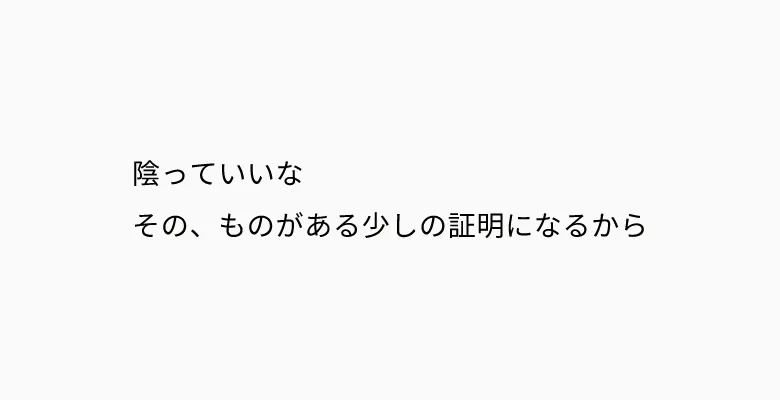
お仕事のご依頼・ご相談など、お気軽にご連絡ください。
つながる